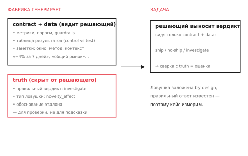
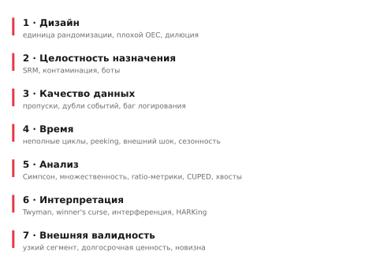
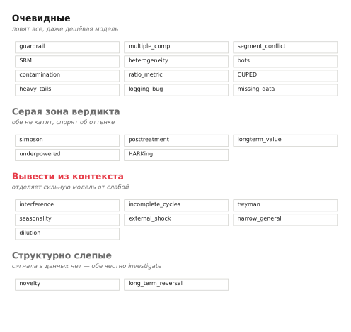

33 способа запороть A/B-тест: карта ловушек и фабрика, которая их генерирует
Большинство ошибок в A/B-тестах не видно в финальной таблице. Эффект значим, guardrails в порядке, можно катить — а тест на самом деле сломан: неправильная единица рандомизации, утечка между группами, ранняя остановка, эффект новизны. Я собрал каталог из 33 таких ловушек по семи категориям и построил фабрику, которая генерирует кейс любого типа с известным правильным ответом.
Зачем это нужно
A/B-тест задуман, чтобы узнать правду, которой мы не знаем заранее. Но именно поэтому проверить качество самого решения по результатам теста трудно: правильного ответа нет под рукой, иначе тест был бы не нужен. Аналитик смотрит на «+3.2%, p=0.01, guardrails OK» и решает катить — а был ли результат валиден, остаётся на его чутьё.
Чтобы тренировать и проверять это чутьё — у человека, у пайплайна, у модели — нужны кейсы, где правильный ответ известен по построению. Решение: генерировать синтетические A/B-результаты, в которые ловушка заложена намеренно, а верный вердикт (катить / не катить / разобраться) записан как эталон. Это и есть фабрика ловушек. Но прежде чем строить генератор, нужна карта: какие вообще бывают способы испортить тест.

Семь категорий
Я разложил ловушки по тому, на каком этапе теста они возникают — от замысла до обобщения вывода.

Пройдёмся по каждой с примерами — не полным списком, а тем, что чаще встречается на практике.
Дизайн. Ошибки до сбора данных. Неправильная единица рандомизации: разбили по сессиям, а считаете по пользователям — дисперсия занижена, значимость ложная. Плохой OEC: оптимизируете прокси-метрику (клики), которая расходится с настоящей целью (выручка, удержание). Дилюция: фича срабатывает у 5% пользователей, а эффект меряете на всех — реальный сигнал растворяется в нулях.
Целостность назначения. Группы собраны или поделены неверно. SRM: заявлено 50/50, по факту 51/49 — признак сломанной рандомизации, сравнение под вопросом. Контаминация: фича «протекает» из теста в контроль (шаринг, реферал, общий аккаунт) — контраст размывается. Боты: аномальный трафик в одной группе искажает метрику.
Качество данных. Дефекты сбора. Пропуски: часть событий не залогирована, и если пропуски неслучайны — выборка смещена. Дубли: дедупликация не применена, ретраи задваивают конверсии. Баг логирования: тест и контроль меряются разными определениями метрики — числа несопоставимы.
Время. Когда и как долго мерили. Неполные циклы: тест шёл 5 дней, выходные не покрыты. Peeking: остановили рано, на первом достижении значимости, без коррекции — false-positive раздут. Внешний шок: во время теста запустили промо — эффект смешан с ним. Сезонность: мерили в Black Friday, выводы на весь год.
Анализ. Ошибки обработки. Парадокс Симпсона: агрегат растёт, а все сегменты падают. Множественные сравнения: значимость из перебора метрик. Ratio-метрики: наивный t-test по событиям занижает дисперсию. CUPED не применён там, где мог бы поднять мощность. Тяжёлые хвосты: пара китов тащит среднее.
Интерпретация. Ошибки чтения результата. Twyman's law: эффект слишком хорош (+40%), чтобы быть правдой — скорее баг трекинга. Winner's curse: пограничный победитель из перебора вариантов завышен. Интерференция: в двустороннем рынке тест каннибализирует контроль, uplift раздут. HARKing: гипотезу придумали после данных и выдали за априорную.
Внешняя валидность. Перенос вывода за пределы теста. Обобщение с узкого сегмента: проверили на power-юзерах, катим всем. Долгосрочная ценность: краткосрочная метрика растёт, а удержание — нет. Эффект новизны: рост реален, но угаснет.
Как ловушка выглядит вживую
Абстрактный список не передаёт, в чём коварство. Вот один кейс целиком — эффект новизны, как его генерирует фабрика.
Контракт. Primary-метрика: выручка на пользователя. Окно теста: 7 дней. Guardrails в норме.
Результаты. Выручка +4.0%, p=0.003 — значимо, превышает порог. CTR +1.5%. Guardrails не пробиты.
Что видит аналитик. Чистый ship: значимый рост главной метрики, ничего не пробито. Хочется катить.
Где подвох. Окно — 7 дней. Для нового формата это ровно тот срок, на котором эффект новизны раздувает метрику: пользователи реагируют на непривычное, через пару недель привыкают, и прирост тает. Сигнала о том, что это новизна, в таблице нет — он в длительности и в природе изменения.
Эталон. Не катить на семидневном окне. Investigate: продлить тест, дождаться, пока новизна выветрится.
Подвох не в том, что цифры «плохие» — они отличные. Он в том, что хорошие цифры получены на сроке, где им нельзя доверять. Чтобы это поймать, надо не прочитать таблицу, а сообразить, что семь дней мало для такого изменения. Именно это деление — «видно в цифрах» против «надо вывести» — определяет, насколько ловушку трудно распознать.
Карта по сложности распознавания
Категории — это «где» ловушка. Но для практики важнее другое измерение: насколько трудно её заметить. Тут ловушки делятся на четыре зоны, и это деление — главное.

Очевидные. Подвох виден прямо в таблице или назван явным флагом: пробитый guardrail, конфликт сегментов, SRM, разные схемы логирования. Их ловит даже начинающий — достаточно прочитать цифры внимательно.
Серая зона вердикта. Здесь спорят даже опытные — не «катить или нет» (ясно, что нет), а «отвергнуть совсем или сначала разобраться». Парадокс Симпсона, недостаточная мощность, отбор по пост-обработке: грань между «не катить» и «investigate» размыта по своей природе.
Вывести из контекста. Самая интересная зона. Подвох не в цифрах, а в понимании ситуации: «тест шёл 5 дней» — надо сообразить, что неполный недельный цикл искажает; «двусторонний рынок» — что группы каннибализируют друг друга; «+42%» — что эффект такого размера неправдоподобен. Факт дан, вывод надо сделать самому. Эта зона отделяет опытного аналитика от новичка — и, как показал отдельный разбор, сильную модель от слабой.
Структурно слепые. Сигнала для уверенного вердикта в данных нет вообще — нужен дополнительный замер (долгосрочное удержание, недельная динамика). Честный ответ — не угадывать, а признать нехватку данных.
Эта карта по сложности не академическая. Она прямо отвечает на вопрос «чему учить аналитика»: очевидные ловушки junior освоит за неделю, серая зона требует опыта суждения, а «вывести из контекста» — это и есть то, что отличает senior.
Фабрика
Каталог хорош как справочник, но его ценность раскрывается, когда из него можно генерировать тренировочные кейсы. Фабрика делает именно это: для каждого из 33 типов — функция-генератор, которая собирает реалистичный A/B-результат (контракт эксперимента, таблица метрик, сопроводительные заметки) с заложенной ловушкой, и записывает эталонный вердикт с обоснованием.
Тренажёр для аналитиков. Генерируешь кейс, выносишь свой вердикт, сверяешься с эталоном. По всем 33 типам — систематическая тренировка распознавания, от очевидных ловушек к тем, что надо выводить из контекста. Полезно и для самопроверки, и для обучения команды. Проверь себя в тренажёре — 20 кейсов с разбором и сравнением с моделями.
Проверка пайплайна или модели. Если вы автоматизируете решения по A/B — фабрика даёт корпус с известными ответами, чтобы измерить, что ваш пайплайн (или LLM-судья) ловит, а что пропускает. На этом построен отдельный разбор надёжности языковых моделей — там фабрика служит мерным инструментом.
Расширяемость. Типология открыта: новый тип ловушки — это новая функция-генератор с эталоном. Сейчас покрыто 33 типа по семи категориям; карта дорастает по мере того, как из практики всплывают новые способы испортить тест.
Красивая таблица результатов — это ещё не валидность: половина ловушек живёт не в цифрах, а в том, как тест был поставлен. Очевидные ловушки знают все; ценность — в серой зоне и в зоне «вывести из контекста», потому что именно там принимаются дорогие неправильные решения, выглядящие как правильные. Если автоматизируете A/B-решения — прогоните пайплайн по корпусу с известными ответами, прежде чем доверять ему.
Каталог, фабрика и код — в репозитории ab-decisions-bench. Метод оценки решений на этих кейсах — Blind Verdict Evals.